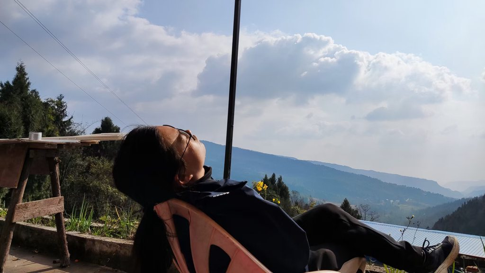

前注：之前有部分读者向我询问赛里斯是什么意思，所以有必要解释一下，赛里斯代表的是丝绸，和瓷器一样是古代的中国最重要的贸易物资，所以赛里斯也指代中国，是一个比瓷器更优雅的名称。使用赛里斯指代中国，最大的好处就是让自己获得了一个第三人称的视角，在使用“中国”这个词汇的时候，你潜意识内总会不忍心批判它，生怕批判的火焰烧到自己的身上。
再过几天，就是赛里斯人民最盛大的春节了，数亿的出生于乡村的赛里斯人会从四面八方回到自己的家乡，这些在城市里被异化了一整年的人，如果没有好的思想武器武装自己，回到那片土地，多半只能瞪大了眼睛好奇地打量周围的世界，多少有点格格不入。所以我想从几个最典型的议题入手，找出赛里斯乡村生活当中的一些形而上的东西，帮助大家武装自己的思想，从那些乡村生活中的瞬间体味出当中的趣味。
归途：赛里斯人的“回埃及记”
对于许多人来讲，在春节期间回到家乡的路程，是遥远的、艰难的、痛苦的。数百到数千公里不等的路程，由硬座火车，飞机，高铁，黑车甚至是摩托车等一种或者多种交通工具接力完成，当然还少不了在寒风中等待下一程白天和夜晚。最近这些年由于家庭汽车保有量的上升，许多人甚至选择亲自驾车数千公里回家，这样的毅力确实让人佩服。
以色列人出走埃及是为了到达流着奶和蜜的土地，而赛里斯人踏上这么一段艰苦的旅程，却是为了到达一个更加贫瘠而无趣的地方，其中的很重要的一个原因就是被称为孝道的一种思想在指引着他们。这一思想让他们把那个一年只能居住七天的地方称为家，而过年需要回到家则是他们那绝对权威的父亲给他们下达的任务。即使他们回到家里也不过就是像蚂蚁一样漫无目的窜来窜去，和并不熟悉的亲戚尴尬的聊天，无休无止的暴饮暴食，绞尽脑汁搜刮着脑袋里为数不多的词汇拼凑出几句违心的并没有什么作用的冠冕堂皇的话语。沉浸其中的人，或许会时而兴奋时而沮丧，时而信心满满，时而坐立难安。而观察着这些的局外人，则如同看着一台喇叭坏掉的电视机里面的节目一般，感到滑稽。
但是回到家乡过年就真的一无是处吗？也不尽然。仔细观察位于农村的“家”: 有带庭院的房子、人与自然和谐相处的广阔空间、静谧的夜晚、过分热情而没有边界感的”土著居民“… 这一切和美国人在夏威夷购买的度假别墅是那么的相像。所以只要你把这里也当成是属于你的夏威夷，一切就变得充满趣味。

图：笔者在夏威夷山区度假
逼婚：浅论赛里斯的婚姻习俗
赛迪斯人的婚姻要分两个层面来看，一个是社会意义上的婚姻，使用婚礼作为其隐喻是再恰当不过的；另一个则是小家庭意义上的婚姻。
赛里斯人对于婚礼非常讲究，古代有三媒六聘、八抬大轿，吃席有几酥几扣凑出来的“十大碗”，处处都是讲究。现代社会以来，随着经济的发展，婚礼变得越来越浮夸，有搞得像演唱会一样的婚庆，就是为了满足那些从小看台湾偶像剧长大的女性脑袋里的不切实际的幻想；有游街示众的豪车车队，即使自己只买得起马自达，车队领头也必须是 BBA, 车辆的数目必须是双数，在数公里甚至数十公里的迎亲的路上，车队必须以小于交通法规规定的最小跟车距离紧紧跟着，防止别人加塞，因为那样寓意着婚姻里第三者的出现。照着这个趋势发展下去，在未来的星际时代，一个平凡的午后，M78 星云的奥特曼家族正在吃着火锅唱着歌，忽然来了八个 Space X 牌火箭，箭头紧贴着前方火箭焰尾呼啸着冲过去，奥特曼家族如临大敌正准备发射光波武器反制，接通无线电信号后才发现是赛里斯人结婚了。
图：星际时代的赛里斯迎亲队伍概念图
赛里斯人结婚的仪式这么讲究，那他们结婚之后一定很幸福吧？其实不然，因为他们对结婚的仪式很讲究，而对婚姻本身却没有太多的思考。
对于政治家来讲，美满的婚姻是树立自己良好公众形象的工具，所以有很多的政治家在自己的婚姻里面三心二意，却不愿意离婚；有个别的政治家因为特殊原因离婚了，也会想尽办法控制媒体，不允许报道他离过婚的消息。对很多随波逐流的普通人来讲，婚姻可以是人生的一个不容置疑的必须的任务；可以是“门当户对，强强联合，勇攀高峰，再创辉煌”的财富整合；对无数的父亲母亲来讲，子女的婚姻则是让他们免于遭受嘲笑的“防嘲垫”。在赛里斯人的眼里，婚姻是工具而不是目的，它可以是很多东西，但无论如何都不是婚姻本身。
每次一到春节前夕，所有的互联网媒体，都充斥着各种逼婚的段子或者新闻，也有不少人能够亲身经历父母的逼婚。为什么赛里斯的父母会这么热衷于逼婚？有很多种说法，诸如“惧怕被老伙计们嘲笑”、“想要传宗接代”之类的俗套的观点本文暂且不谈，我是一个不走寻常路的人，所以我今天就要来搞点歪理邪说，好好的剖析一下这里面的人物心理。
首先分析一下在逼婚这个行为当中父母的动机。父母实质上和子女的婚姻关系并不大，并不会从中收获太多正面的影响，很多父母在孩子的婚姻当中往往是出钱出力，最终被挂在豆瓣群组里面批判一番；有部分父母还会因为”掏空六个钱包“这类的社会新风潮而大亏一笔。为什么他们还热衷于这样一件吃力不讨好的事情？要弄清这个问题的答案，还得从赛里斯的传统文化入手，有句古话“养儿方知父母恩”，这句话含义非常丰富，首先他暗示了父母是带着希望你感恩他们的目的而生下你；其次等子女有了后代之后自然就会深刻的体会到父母的恩情。所以父母的逼婚，很可能是希望你尽快感恩。
养儿方知父母恩作为逼婚的理论基础这个观点，还有两个疑点。第一点是，为什么父母想让你报恩不是选择直截了当的告诉你，而是要拐弯抹角的通过逼你结婚这样一个大动作，来让你主动的感恩。这其实不难理解，赛里斯的文化永远在教导人们要被动地等待自己的幸福，而不是主动去追求，在赛里斯的西南地区有一句民间谚语叫“不请自来客”，描述的就是在别人没有邀请你的时候你就去吃席的场景，是一种很丢脸的行为。
第二个疑点是为什么子女在有了自己的后代之后，就会深知父母的恩情呢？要探究它的原因，首先我要追问的是一个人从不知道感恩到知道感恩这样一个转换发生的具体时间。“养儿”这一个词语是一个时间非常模糊的词汇，他指的到底是受精卵开始发育、胎儿分娩完成、还是指的小孩上幼儿园或者上了大学？这每一个时刻看起来都没有和知道感恩父母之间有什么非常强的关联。在苦苦思索很久之后，我才发现时间并不是这个转换的关键，养儿这样的一个词语，蕴含着一个身份的变化，当一个儿子结婚生子之后，他将会拥有一个父亲的身份。而从不知道感恩转换到知道感恩的奇妙变化，就发生在这个新身份出现的时刻，在自己已经成为父亲之后，没有理由不去支持一个把感恩父亲作为纲领的理论。但同时又有一些奇怪的现象，这些同时拥有父亲和儿子两个身份的人，在作为父亲的时候，则满口是仁义道德三纲五常；在作为儿子的时候，就患上了失忆症，不再提感恩这样形而上的东西。在意识形态上，我们经常会提起一个词语叫“马克思主义的赛里斯化”，但事实上，应该是马克思主义来到赛里斯过后，大声地感慨“他乡遇故知”，这对立统一的思想，在赛里斯早就已经存在了数千年之久。
三劝进：赛里斯春节的至高哲学
在赛里斯的封建时代，有许多贵族想称孤道寡，但是又不好意思明说。一些善于揣摩上意的人，就会上劝进表。如果某人一收到劝进表就称帝，这样也会显得过于刻意，所以劝人当皇帝，有严格的程序，要三劝三辞，最终是盛情难却、万不得已才当了皇帝。我们用“三劝进”这个词语来代指这种有趣的现象。
那这个位于庙堂之上的“三劝进”，对于解释处江湖之远的老百姓的生活到底又有什么指导意义呢？如果社会是一个庞大的结构，那我愿意用分形几何来比喻它，分形是数学当中的一种美妙图形（也可以是基于集合论的更抽象的结构），它的特点是不管你如何放大，它的结构都是相似重复的。而我们的社会也是这样，大的层面上皇帝登基需要三劝进，再往下省长，县长，村长以及每一个个体都在践行这样一个至高哲学。
图：The Mandelbrot Fractal，被称为“上帝的指纹”的曼德勃罗集
小时候，过年走亲戚的时候，明明我的父母在出发之前就已经盘算好了对方大概会给多少红包。但真到了给红包的时候，父母却教育我要再三的推辞最后收下。这几个来回的假惺惺的推辞和拉扯，和我直接欣然接受相比结果是完全一样的，但是过程上却浪费了无数的 ATP（一种细胞内能源物质）, 不知道得吃几口大米饭才能补回来。这对于整个社会来讲都是一个不经济的行为，而春节期间会集中爆发数十亿次的此类行为，如果把这些能量都节约下来，造一艘航母估计不成问题。
在赛里斯春节的饭桌上，有美酒有美食，在这个美好欢乐的氛围当中，小酌两杯是在所难免的。当开出一瓶好酒来的时候，大家明明都非常想认认真真品品它的味道，但是他们却不甘于共同举杯庆祝，而是要在这个餐桌上分出个三六九等，形成一个桌子上的帝国体系，等待着别人来敬酒。当别人倒酒的时候，无论你酒量如何，你都要不断的说“够了够了够了，不要再倒了”，即使你知道最终还是会倒上满满的一杯，因为赛里斯有一句古谚语叫“酒满敬人，茶满欺人”。如何接受敬酒又是一门大学问，你要先皱着眉头说“你这话说的不好听，我不跟你喝”，等话语纠正过来又说“你这事儿做的不对，我不跟你喝”，最终来来回回推辞数次，两杯酒下肚，这场令人尴尬的表演才算结束。不过这一招只能对在家庭这个帝国当中处于你下级的人使用，如果你对位于你之上的人使用，那你就离被逐出家门不远了。
在上一个逼婚的话题当中，我尚未分析被催婚的人，也就是作为子女的到底是什么样的心态。一开始我以为他们对于逼婚是深恶痛绝，但是在看到互联网上发布的那么多的配着欢快的音乐，同时里面的人还嬉皮笑脸的短视频，我就知道事情不是那么简单。赛里斯人最大的一个特点就是口是心非，比起主动表达自己的意图，他们倾向于选择永远等待着别人来“三劝进”，他们用信奉不婚主义来掩饰着自己没有被爱的尴尬，他们在社交网站上留下“期待入室抢劫的爱情”这样搞笑的签名。而逼婚这个行为对于他们来讲就是劝进，想要主动去追求自己的爱情害怕被辜负，想要被爱又没有足够好的运气，年龄增大、朋友的减少和内心的贫瘠让他们困顿于孤独之中。对着父母的劝进，实际上他们是期待着的，期待着能够从天而降一个父母体制内、孩子开大奔、省城有套房的理想对象。但是在这从天而降的幸福到来之前，自己不能显得太配合太渴望，一定要遵循劝进哲学中的三劝三辞的基本原则。对于这种奇怪的现象，我这边建议过春节的时候还是多吃点菜，不要光喝酒。
Refs：
SpaceX vs Nasa: who will get us to the Moon first? Here’s how their latest rockets compare